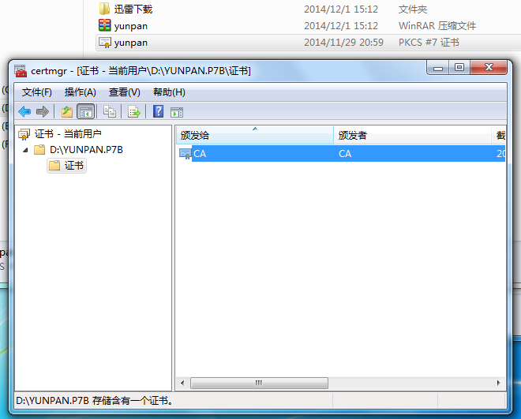
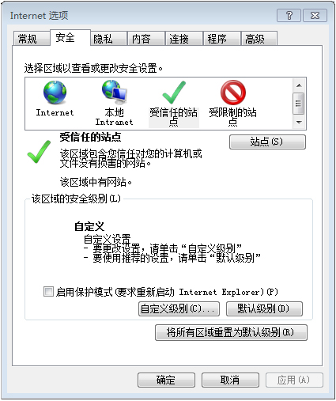

1. 下载CA证书；
2. 解压证书；
3. 解压完成，双击安装证书；

4. 点击安装证书；
5. 请勾选“将所有的证书放入下列存储”，在弹出窗口选择“受信任的根证书颁发机构”点击确定；
6. 证书导入成功；
7. 打开IE浏览器，依次选择“工具-Internet选择-安全-可信站点”；

8. 点击站点，弹出窗口，请输入“https://yunpan.hbed.com.cn”,点击添加。